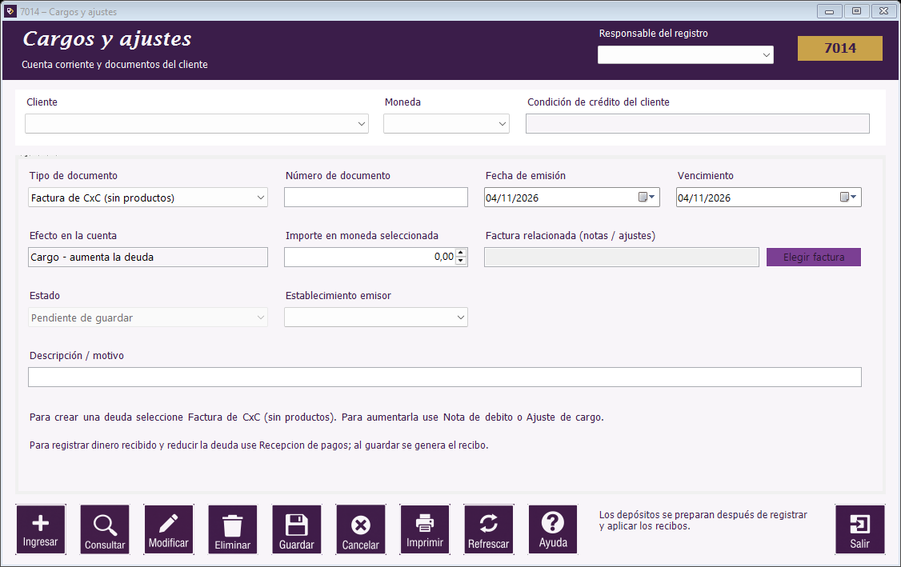

|   |
| |
Guía de Movimientos de clientes | Estado de cuenta | Cargos y ajustes | Recepción de pagos | Depósitos a Bancos | Consulta de recibos | Botones de Movimientos de clientes | Mensajes frecuentes de Movimientos de clientes

Ubicación de los campos y del botón Ayuda en el formulario.
| Campo / acción | Uso |
|---|---|
| Factura interna de CxC | Registra un cargo por el importe indicado, sin detalle de productos. No emite ni certifica un DTE. |
| Nota de débito / ajuste positivo | Aumenta la deuda de la factura relacionada. |
| Nota de crédito / ajuste negativo | Disminuye la deuda de la factura relacionada. No representa por sí mismo dinero cobrado. |
| Establecimiento emisor | Sucursal de la empresa que origina el documento. |
Consulte el documento antes de modificarlo. La edición permite los cambios habilitados, como descripción y vencimiento de una factura interna. Para anular, indique el motivo y revise antes los pagos o notas relacionados. Los movimientos de un período cerrado no pueden registrarse en ese período.